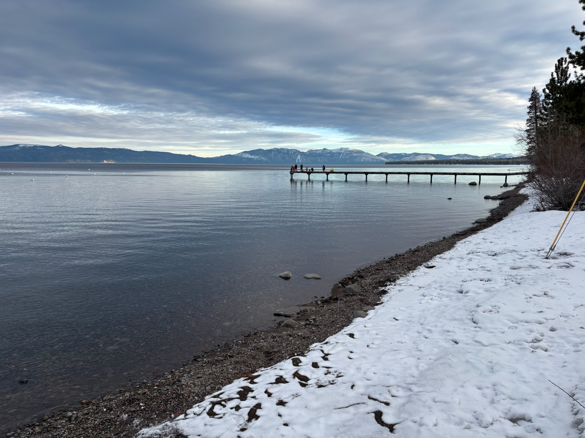

Weekly Coffee #7
January 11, 2024
Happy (late) New Years everyone! Since it has been difficult to keep up a rhythm of writing Weekly Coffee, I am considering moving to a monthly format of updates, accompanied by longer form writing. It seems like it could be cool to cultivate a habit of some more substantial writing, as suggested by Jonjon.
It would potentially be a special thing to regularly publish writing to a group of people who I know and respect, and to get feedback from anyone interested enough to read it and connect with the source material. It seems like writing is a necessary practice for fully developing our thoughts on complicated matters, and that by writing down our thoughts we are actually committing to them in an important way.
Part of the inspiration as well comes from my recent reading, the Alexander Hamilton Biography by Ron Chernow. I am only in chapter 3 of 43, so I imagine I will have many more thoughts to share by the time I am finished. However, even in the first 3 chapters it is clear that Hamilton's ability to influence and guide the development of a young United States will stem from his ability to write effectively, and establish his thoughts well.
While most of us are not in the position to drastically alter the course of history like Hamilton was, it is conceivable that by being intentional in writing and developing our thoughts we can grow to have a positive impact and influence on the people around us.
Particularly, longer form writing seems particularly important in an era where short form communication like texts and tweets seem to be the loudest, most promoted method of communication online. It seems like all the reddit posts and tweets I see online are trying to convince people of something, but I can't imagine that anyone is actually persuaded by something that they read in 280 characters.
I don't think this issue is necessarily as dire as some may suggest, but I imagine it must be a good exercise for me to force myself to write longer, and with more intentionality. Without further ado...
Whats Been Up:
Most of my time over Christmas was spent in Newport Beach with my family. It is always incredibly encouraging and refreshing to spend time where I grew up. I really felt back to my roots this time around, surrounded by extended family and decades long friends. I believe I have mentioned it before, but it can also be a challenge to feel so deeply rooted to my old home. It feels like I am bit stretched thin between everywhere I have lived and built connections.
After Christmas, I went up to Sacramento for New Years with Jenny. On New Years Eve, I got to visit Lake Tahoe for the first time, which was beautiful.
What I've Been Reading/Listening To/Watching:
The Meaning of Marriage - Timothy Keller
Hebrews - Streetlights
Rethinking with guest Sam Altman - Adam Grant
Hunt for the Wilderpeople - Taika Waititi
Song of the Week
Picture of the Week

Lake Tahoe
{kind=link}
{kind=link}
{kind=link}
{kind=link}